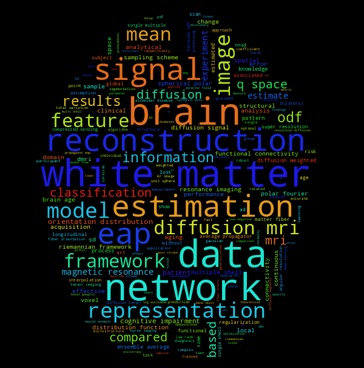

Jian Cheng (程健)
Home
Resume
Education
Professional Experience
Honors and Awards
Professional Activities
Publications
Publications By Type
Book Chapters
Journal Articles
Conference Articles
Conference Abstracts
Theses
Publications By Year
Publications By Selected Venues
First- or Corresponding-Author Articles
Book Chapters
Journal Articles
Conference Articles
Conference Abstracts
Theses
Software
Diffusion MRI Tool
Brain Age Estimation
LRTV for Image Superresolution
bibtex2html.py
Chinese Homepage @ BUAA
Jian Cheng (程健)
Home
»
Publications
Publications
¶
Publications By Type
Publications By Year
Publications By Selected Venues
First- or Corresponding-Author Articles
